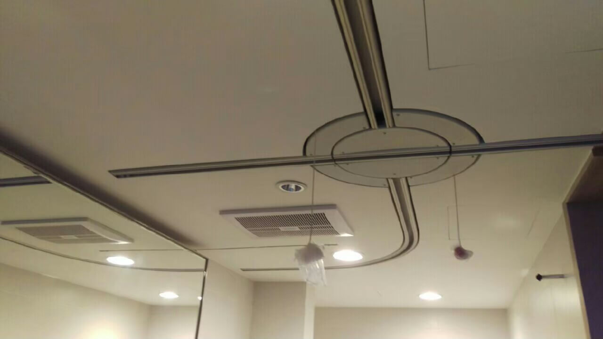
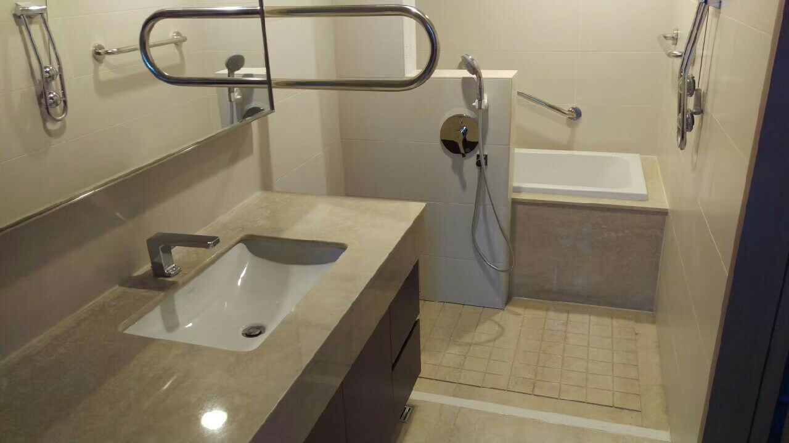

設計歷程
-
2012-進入AD無障礙設計領域從2012服務漸凍人的家開始，進入了AD無障礙設計的領域，漸凍人如果需要在家裡面順利的移動，就需要天花軌道系統，在設計這個案子時，前期做了許多功課，才能將漸凍人的移動與生活習慣串聯再一起。

-
將UD通用設計融入到居家生活因此開始將UD通用設計融入到居家生活，創造出友善並且符合使用者的生活習慣，才能稱為一個家，以此也接到退休外交官、建築師、護理師等自宅的舊翻新改造，幫他們打造出退休後的居家空間。
-
2019-導入GD健康綠裝修到了2019當人們開始講究低甲醛與無毒建材時，我們也快速導入GD健康綠裝修，來為接下來的客戶打造更安全健康的居家空間。